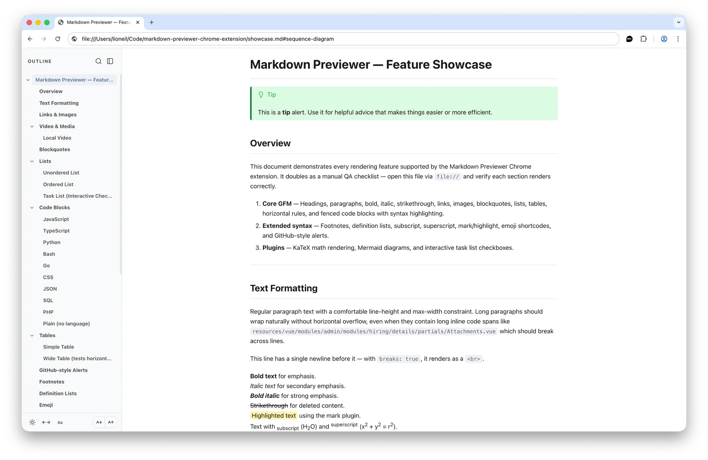
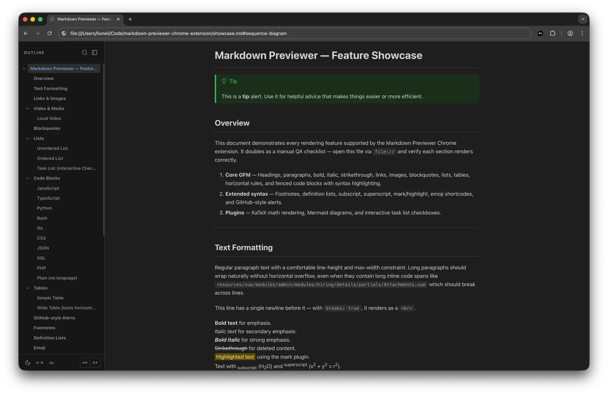

Markdown Previewer
A Chrome extension that renders local Markdown files.


Setup
- Install the extension from the Chrome Web Store.
- Open its details page and turn on Allow access to file URLs.
text
chrome://extensions/?id=nccgimhmfbjfiakcapgeofcfbpkpganp - Open a
.mdor.markdownfile in the browser.
Note
Works in Chrome and Brave.
Features
Keyboard shortcuts
| Shortcut | Action |
|---|---|
Alt+Shift+T | Cycle theme |
Ctrl+Shift+K | Toggle sidebar |
Ctrl+Shift+F | Search outline |
Ctrl+Shift+W | Toggle wide mode (macOS only) |
Ctrl+Shift+G | Toggle serif font |
Ctrl+Shift+= | Increase font size |
Ctrl+Shift+- | Decrease font size |
Privacy
The extension makes no network requests and does not upload your files. Settings are stored in chrome.storage.sync.